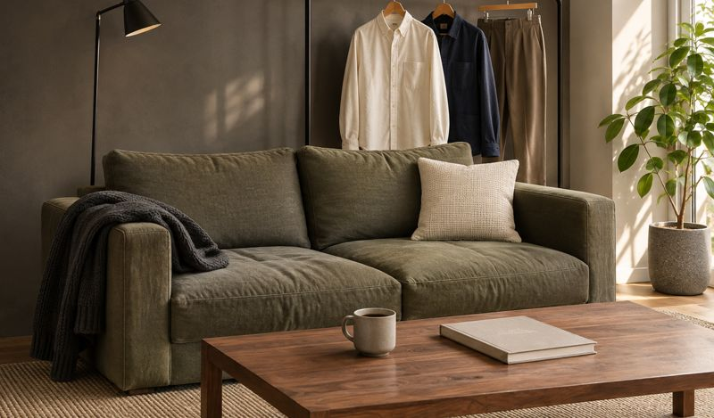
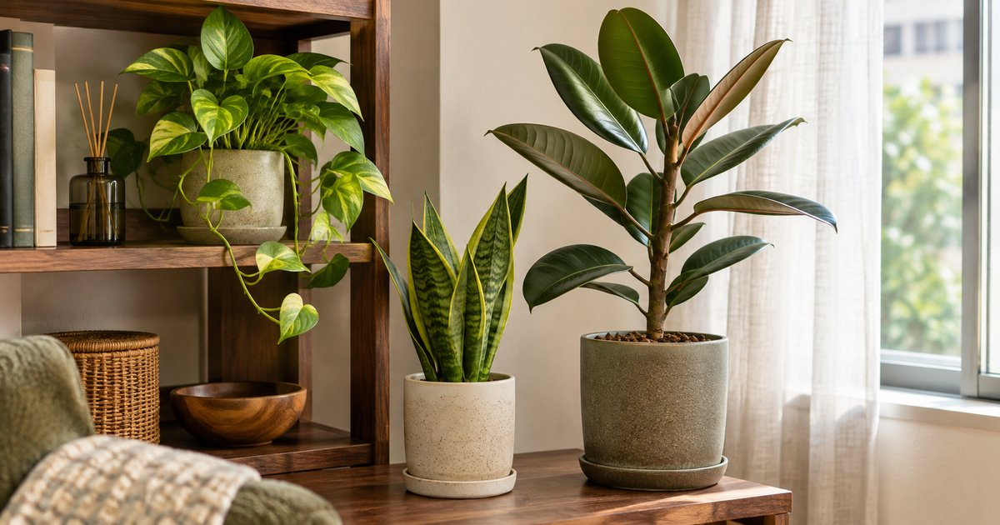
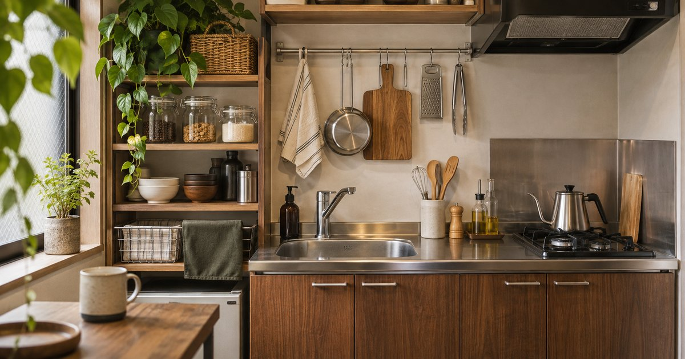
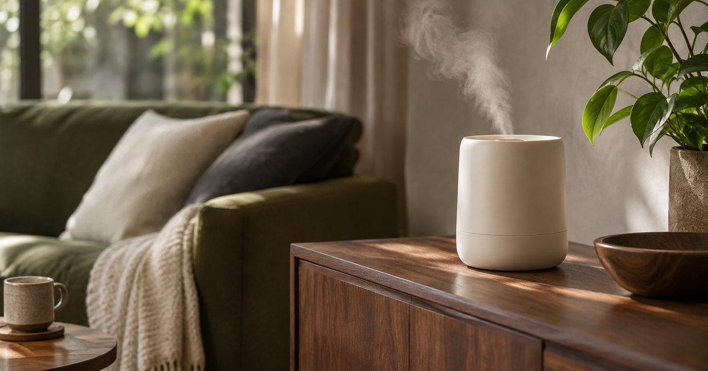
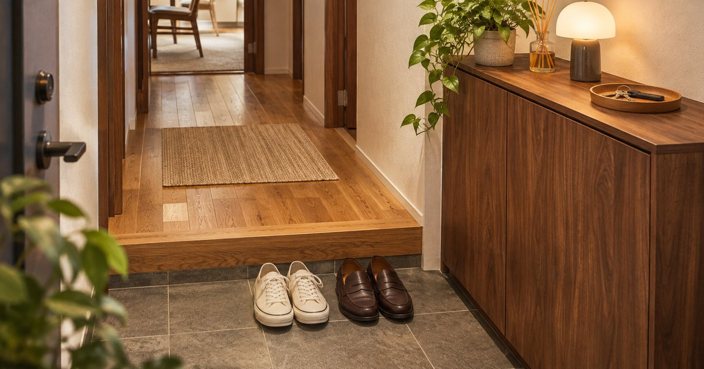
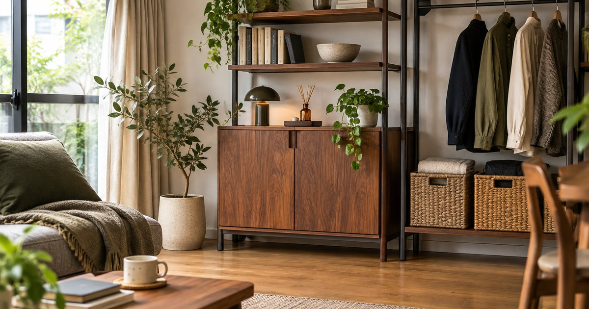
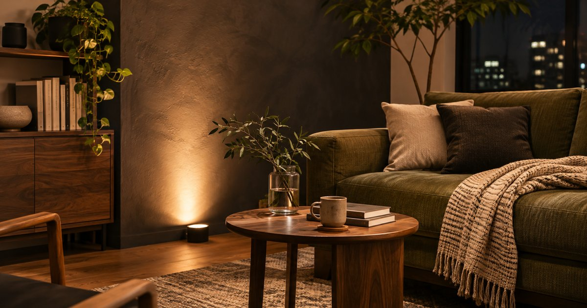
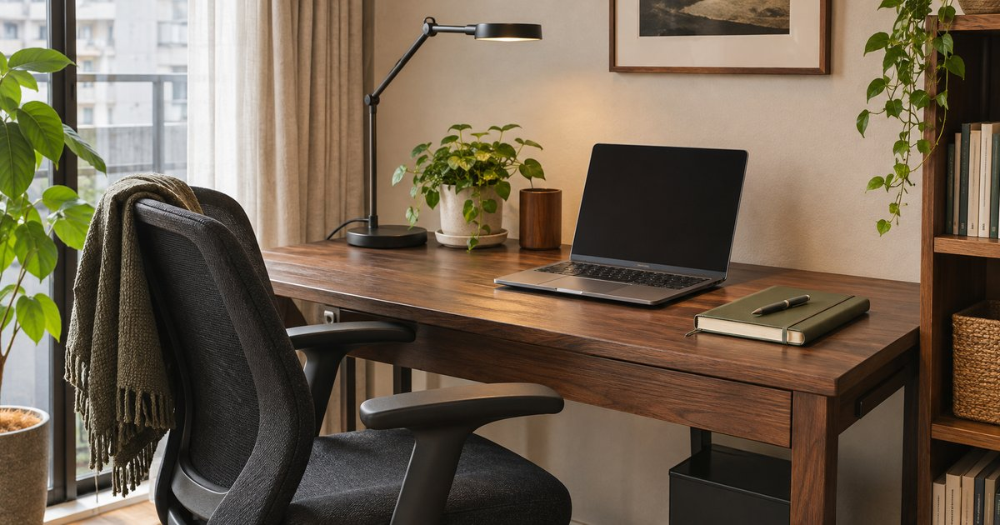

部屋を整える
一人暮らしの部屋を快適に、すっきり見せるための家具・照明・収納・レイアウトを紹介します。
15本の記事
 インテリア
インテリア一人暮らしのソファの選び方。サイズ・素材・手入れで比べる
置き場所の測り方、素材ごとの手入れのしやすさ、配置図、よくある失敗例、条件別のソファ3点まで。一人暮らしのソファ選びをまとめました。
 インテリア
インテリアカーテンの選び方。サイズの測り方と機能の違い
部屋の面積の中でも大きな割合を占めるカーテン。正しいサイズの測り方と、遮光や断熱などの機能の選び方を紹介します。
 インテリア
インテリアラグの選び方。サイズ・素材・色で部屋の印象を変える
床の印象を大きく変えるラグ。部屋の広さに合ったサイズと、季節や手入れに合わせた素材の選び方を紹介します。

インテリア初心者でも育てやすい観葉植物と、置き場所・水やりの基本
部屋に緑があるだけで雰囲気は大きく変わります。初心者でも枯らしにくい観葉植物の選び方と、置き場所・水やりのコツを紹介します。
 インテリア
インテリアローテーブルの選び方。高さ・形・機能で使いやすさが変わる
一人暮らしの部屋の中心になるローテーブル。ソファとのバランスや、形・機能の選び方を紹介します。
 インテリア
インテリアクローゼット収納のコツ。服を見やすく、取り出しやすくする方法
クローゼットがごちゃつく原因は、しまい方のルールがないこと。服が見やすく、片付けやすくなる収納のコツをまとめました。

インテリア一人暮らしの小さなキッチン収納術。狭くても使いやすくする工夫
一人暮らしのキッチンは調理スペースも収納も限られがち。狭いキッチンを使いやすくする収納のアイデアを紹介します。

インテリア加湿器の選び方。4つの加湿方式の違いと手入れのしやすさ
冬の乾燥対策に欠かせない加湿器。スチーム式・気化式・超音波式・ハイブリッド式の特徴と、選ぶときのポイントを解説します。
 インテリア
インテリア賃貸でもできる壁の飾り方。ポスター・棚・フックの取り入れ方
何もない壁は部屋を殺風景に見せがち。賃貸でも壁を傷つけにくい方法で、おしゃれに飾るアイデアを紹介します。

インテリア玄関をすっきり整える。狭い玄関の収納と片付けのコツ
毎日通る玄関は、部屋の第一印象を決める場所。靴や小物があふれがちな狭い玄関を整えるコツをまとめました。

インテリア狭い部屋の収納術。「見せる収納」と「隠す収納」の使い分け
物が多くても、収納の考え方を変えれば部屋はすっきり見えます。見せる収納と隠す収納の使い分けと、便利な収納アイテムを紹介します。
 インテリア
インテリア寝具を見直そう。マットレス・枕・掛け布団の選び方の基本
毎日使う寝具は、部屋づくりの中でも見直す価値の高いアイテム。マットレス・枕・掛け布団を選ぶときの基本的な考え方をまとめました。

インテリア間接照明で部屋の雰囲気を変える。照明の選び方と置き場所
照明を変えるだけで、部屋の印象は大きく変わります。色温度の選び方と、間接照明を置くと効果的な場所をまとめました。

インテリア在宅ワークがはかどる。デスク周りの整え方と揃えたいアイテム
長時間座っても疲れにくく、集中しやすいデスク環境のつくり方。デスク・椅子・照明・配線の順にポイントを解説します。
 インテリア
インテリア一人暮らし1Kのレイアウト。狭くても広く見せる家具の配置
限られたスペースでも、家具の高さや置き方を工夫すれば部屋は広く見えます。1Kの部屋づくりで押さえたい基本を紹介します。